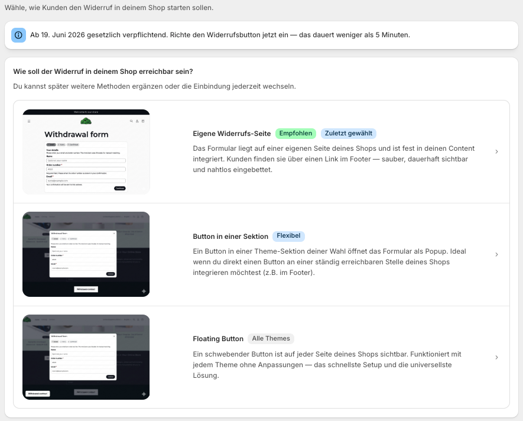
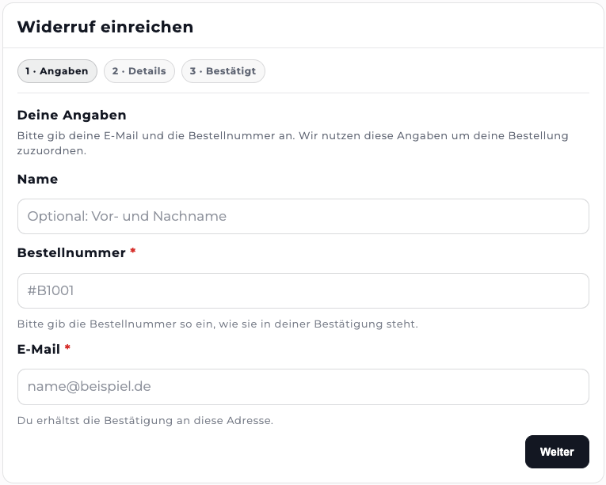
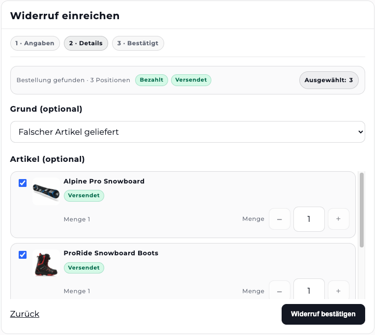
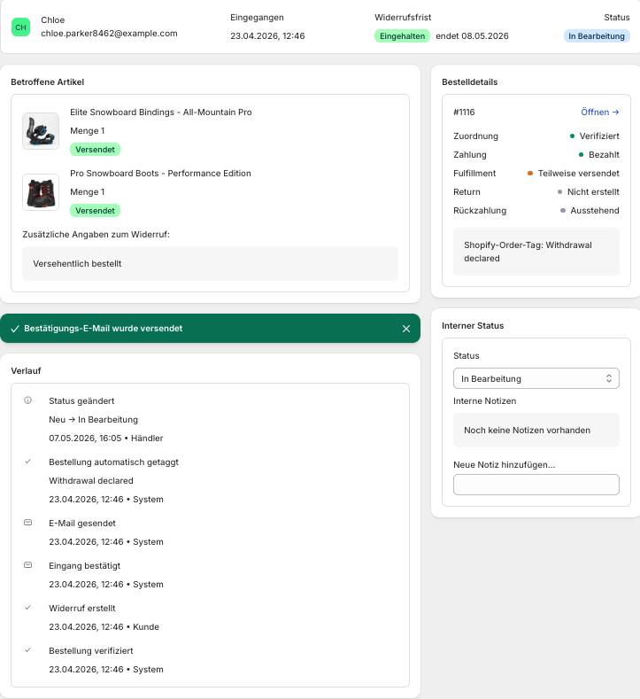

Ab dem 19. Juni 2026 müssen viele B2C-Onlineshops in der EU eine elektronische Widerrufsfunktion anbieten. Für Shopify-Händler stellt sich gerade eine sehr praktische Frage: Wie setze ich den EU-Widerrufsbutton konkret in Shopify um?
Eine Möglichkeit ist der DIY-Weg mit Shopify Forms, Shopify Flow und einer automatisierten E-Mail. Diesen kostenlosen Ansatz habe ich in einem separaten Artikel zum Widerrufsbutton in Shopify erklärt.
Für viele Händler ist aber eine spezialisierte Shopify Widerrufsbutton App sinnvoller. Vor allem dann, wenn der Prozess nicht nur irgendwie funktionieren soll, sondern mehrsprachig, datenschutzbewusst und sauber im Shopify-Admin bearbeitbar sein soll. Genau hier setzt Revoq an. Mehr zum rechtlichen Hintergrund findest du auf consumer-withdrawal.eu.
DIY mit Shopify Forms/Flow oder App-Lösung?
Beide Wege funktionieren, sie unterscheiden sich aber bei Setup, Mehrsprachigkeit und Bearbeitung. Der DIY-Weg mit Shopify Forms und Flow kann für einfache Shops eine gute Lösung sein. Gerade bei einsprachigen Shops mit wenig Prozessanforderungen ist der Ansatz nachvollziehbar. Der Unterschied beginnt dort, wo der Widerrufsbutton nicht nur ein Formular sein soll, sondern ein echter Workflow.
| Thema | DIY mit Shopify Forms/Flow | App-Lösung mit Revoq |
|---|---|---|
| Setup | manuell über mehrere Shopify-Funktionen | geführtes Onboarding |
| Einbindung | Formular, Seite und Flow selbst konfigurieren | Shopify Theme App Extension |
| Zwei-Schritt-Flow | muss sauber selbst abgebildet werden | integriert |
| Bestätigungsmail | über Flow/Mail selbst einrichten | automatisch |
| Mehrsprachigkeit | manuell pflegen | alle EU-Sprachen integriert |
| Bestellabgleich | nicht nativ | Kunde sieht passende Bestellung sofort |
| Teilwiderruf | meist Freitext | Artikel- und Mengenauswahl |
| Bearbeitung | verteilt über Forms, Flow, E-Mail | Dashboard im Shopify-Admin |
| Formular- und Mailtexte | an mehreren Stellen pflegen | zentral in Revoq anpassbar |
| Datenschutzprüfung | abhängig vom Setup und Anbieter | auf EU- und DSGVO-relevante Anforderungen ausgerichtet |
Kurz gesagt: Shopify Forms und Flow können reichen, wenn du eine einfache DIY-Lösung möchtest. Revoq ist sinnvoll, wenn du den Widerrufsprozess strukturiert, mehrsprachig und mit weniger Setup-Risiko abbilden willst.
Warum Datenschutz beim Widerrufsbutton besonders wichtig ist
Der EU-Widerrufsbutton ist nicht nur ein Button im Theme, beim Absenden eines Widerrufs werden personenbezogene Daten verarbeitet. Konkret: Name, E-Mail-Adresse, Bestellnummer, ausgewählte Artikel, Mengenangaben und optional eine Nachricht des Kunden. Damit ist der Widerrufsprozess auch ein DSGVO-relevantes Thema.
Shopify-Händler sollten deshalb bei jeder App prüfen:
Wer ist der Anbieter? Gibt es eine klare Datenschutzerklärung? Gibt es einen Auftragsverarbeitungsvertrag bzw. DPA/AVV? Ist nachvollziehbar, welche Daten verarbeitet werden? Gibt es einen erreichbaren Support-Ansprechpartner? Ist die Lösung auf europäische Händler und EU-Anforderungen ausgerichtet?
Gerade im Shopify App Store gibt es viele internationale Anbieter. Das ist nicht automatisch schlecht. Aber bei einer Funktion, die Kundendaten verarbeitet und rechtlich relevant ist, sollte man nicht nur auf Preis und Feature-Liste schauen. Revoq wurde speziell für europäische Shopify-Händler entwickelt und legt den Fokus nicht nur auf die technische Einbindung, sondern auch auf transparente Datenverarbeitung und nachvollziehbare Händlerfunktionen.
Was Revoq anders macht als eine einfache Formularlösung
Revoq ist eine Built-for-Shopify-App für den EU-Widerrufsbutton. Die App unterstützt Shopify-Händler bei der rechtssicheren Umsetzung der elektronischen Widerrufsfunktion und der Bearbeitung der eingehenden Widerrufe direkt im Shopify-Admin. Der große Vorteil: Händler müssen sich den Prozess nicht selbst aus mehreren Shopify-Bausteinen zusammenbauen.
Geführtes Onboarding statt manuellem Setup
Nach der Installation führt Revoq durch die Einrichtung. Händler können den Widerrufsbutton bzw. das Widerrufsformular über eine Shopify Theme App Extension einbinden. Das heißt: kein eigener Code notwendig, keine externe Formularlösung, Einbindung direkt im Shopify-Theme, verständlicher Setup-Prozess und schnelle Aktivierung im Shop.

Storefront-Formular mit Zwei-Schritt-Flow
Der eigentliche Widerrufsflow ist zweistufig aufgebaut. Kunden geben zunächst ihre Daten ein und bestätigen den Widerruf anschließend bewusst. Das ist wichtig, weil der Widerrufsbutton nach der neuen Regelung nicht einfach nur ein Kontaktformular sein sollte. Der Kunde soll klar erkennen, dass er eine Widerrufserklärung abgibt.
Revoq unterstützt unter anderem Zugriff ohne Kundenlogin, Eingabe von Name, Bestellnummer und E-Mail, einen klaren zweistufigen Flow, automatische Bestätigung nach erfolgreichem Absenden und mehrsprachige Storefront-Texte.

Bestellabgleich und Teilwiderrufe
Ein besonders wichtiger Unterschied zu einer einfachen Shopify-Forms-Lösung ist der Bestellabgleich. Revoq kann Bestellnummer und E-Mail-Adresse mit Shopify-Bestellungen abgleichen. Wenn eine Bestellung gefunden wird, können dem Kunden die Bestellpositionen angezeigt werden. Dadurch kann der Widerruf strukturierter erfasst werden.
Das ist vor allem praktisch, wenn Kunden nicht die komplette Bestellung widerrufen, sondern nur einzelne Artikel. Revoq unterstützt je nach Plan Bestellabgleich über Bestellnummer und E-Mail, Anzeige der Bestellpositionen, Auswahl einzelner Artikel, Mengenauswahl für Teilwiderrufe, optionale Widerrufsgründe und einen Friststatus zur besseren internen Einordnung. Das reduziert Freitext, Rückfragen und manuelle Zuordnung im Support.

Automatische Bestätigungsmail
Nach erfolgreicher Bestätigung sendet Revoq automatisch eine Bestätigungsmail an den Kunden. Das ist ein zentraler Teil des Prozesses, weil der Kunde eine Eingangsbestätigung erhalten soll. Bei einer DIY-Lösung muss diese Mail über Shopify Flow oder eine andere Automatisierung korrekt eingerichtet und getestet werden. Mit Revoq ist dieser Teil bereits im Prozess enthalten. Je nach Setup können Händler außerdem Absenderdaten, Reply-To und weitere E-Mail-Einstellungen konfigurieren.
Flexible Texte für Formular und Bestätigungsmail
Ein weiterer Vorteil gegenüber einer einfachen Formularlösung ist die Anpassbarkeit der Kommunikation. Viele Shops möchten nicht nur ein Standardformular anzeigen, sondern den Widerrufsprozess sprachlich an ihre Marke und ihren Kundenservice anpassen. Mit Revoq können Händler wichtige Formulartexte flexibel konfigurieren und die Bestätigungsmail an den eigenen Kommunikationsstil anpassen.
Bei einer DIY-Lösung müssen solche Texte meist an mehreren Stellen gepflegt werden, zum Beispiel im Formular, in Shopify Flow und in den E-Mail-Vorlagen. Revoq bündelt diese Einstellungen zentraler und reduziert dadurch Pflegeaufwand und Fehlerquellen.
Bearbeitung im Shopify-Admin
Ein Widerrufsbutton ist nur der Anfang. Danach müssen die eingehenden Widerrufe intern bearbeitet werden. Bei einer DIY-Lösung landen Daten oft verteilt in Formularantworten, E-Mails oder Flow-Aktionen. Revoq bündelt den Prozess direkt im Shopify-Admin.
Händler können dort neue Widerrufe sehen, nach Vorgängen suchen, Status bearbeiten, Details zum Kunden und zur Bestellung prüfen, die interne Bearbeitung strukturieren und je nach Plan Exporte, Timeline oder weitere Shopify-Funktionen nutzen. Das macht Revoq nicht nur zu einem Formular, sondern zu einem echten Workflow für Shopify-Händler.

Für wen ist Revoq besonders sinnvoll?
Revoq lohnt sich, wenn der Widerrufsbutton mehr als ein Formular sein muss. Typische Fälle: Der Shop verkauft in mehrere EU-Länder, die Storefront ist mehrsprachig, das Team möchte Widerrufe zentral im Shopify-Admin bearbeiten, Bestellabgleich und Teilwiderrufe sind wichtig, der Händler möchte keine eigene Forms/Flow-Konstruktion warten, eine Agentur betreut mehrere Shopify-Shops, Datenschutz und Anbietertransparenz sind relevante Auswahlkriterien.
Für sehr einfache Shops kann der DIY-Ansatz weiterhin ausreichen. Aber sobald Mehrsprachigkeit, Bestellzuordnung, Teilwiderrufe oder interne Bearbeitung wichtig werden, ist eine spezialisierte App meist die pragmatischere Lösung.
Vertrauen und App-Store-Listing
Bei einer rechtlich relevanten Funktion wie dem Widerrufsbutton zählt Vertrauen. Händler geben hier Kundendaten in eine App und verlassen sich darauf, dass der Prozess im Alltag zuverlässig funktioniert.
Revoq ist als Built-for-Shopify-App im Shopify App Store verfügbar und wird bereits von vielen Shopify-Händlern genutzt, darunter Shops, die Wert auf saubere Prozesse, Datenschutz und zuverlässigen Support legen. Ein starkes Signal sind die positiven Bewertungen im App Store. Händler heben dort besonders die einfache Einrichtung, den schnellen Support und den klaren Workflow hervor.
Gerade beim EU-Widerrufsbutton sollte man nicht nur auf den günstigsten Anbieter schauen. Wichtig ist, ob die Lösung aktiv gepflegt wird, ob der Anbieter erreichbar ist und ob andere Shopify-Händler der App vertrauen.
Fazit: DIY ist möglich, aber nicht immer die beste Wahl
Den Widerrufsbutton in Shopify einzubauen ist grundsätzlich auch mit Shopify Forms und Shopify Flow möglich. Für einfache Shops kann das ein guter kostenloser Weg sein. Wer aber weniger Setup-Risiko, Mehrsprachigkeit, Bestellabgleich, Teilwiderrufe und eine zentrale Bearbeitung im Shopify-Admin möchte, sollte sich eine spezialisierte App ansehen. Revoq ist genau dafür gebaut.
Revoq für deinen Shopify-Shop einrichten
Revoq bildet den EU-Widerrufsbutton in Shopify ab: Storefront-Formular, Bestellabgleich, Teilwiderrufe, Bestätigungsmail und Bearbeitung im Admin. Kostenloser Plan verfügbar, Setup in wenigen Minuten.
Revoq im Shopify App Store öffnen